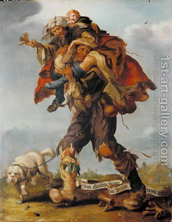

Avodah Zarah 5 - Immortality
Had the Jews accepted the Torah and not served the Golden Calf, they would have achieved immortality, as it says, " I said, you will be like angel, but now you will die like man (Adam) ." Said Resh Lakish, "For this we should be thankful to them." Had they not sinned, we would not have been born.
But didn't God show Adam all the generations of men? And isn't it also true that the Messiah will not come until all souls have been reincarnated in physical bodies? Rather, understand Resh Lakish as saying that had they lived forever in a perfect state, we would be considered as nonentities compared to them.
Another opinion is that the decree of death is irrevocable, and had Jews not sinned, they would be free from any foreign domination, but would still remain mortal. It is based on "Observe the Torah, so that it will be good for you" - but not so that you would be immortal. And Resh Lakish answers that the decree of "death" can be fulfilled through being poor, because four are considered as dead: poor, blind, leper, and one without children.
Art: Adriaen Pietersz van de Venne - Allegory of Poverty